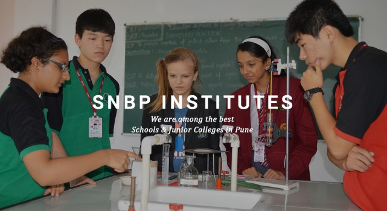

WELCOME TO SNBP INSTITUTES - A RENOWNED INTERNATIONAL SCHOOL IN PUNE

Started with merely two rooms in the year 2007, today SNBP international school in pune has become one of the best CBSE, SSC, IGCSE board
schools in Pune. The eight storey school structure is filled with ultra modern amenities and all the relevant facilities that are essential
for a competitive learning environment. Being recognized as one of the best international schools in Pune, India, we take great pride in
disclosing that we have the best trained, certified, experienced, and skilled teaching staff. We make learning fun for all our students.
Our international CBSE, IGCSE, Cambridge school in Pune follows a holistic growth approach; hence we give equal importance to both
education and extracurricular activities.
To be reckoned as an institution committed to respect the five elements while equipping its students with knowledge and love,
translated to wisdom, to soar beyond the horizon.
To provide the inputs to our students to cultivate respect for the environment while facilitating an ambience to kindle the light of
knowledge and love. To harness the right skill and attitude in our students to constructively contribute to the country and the world.